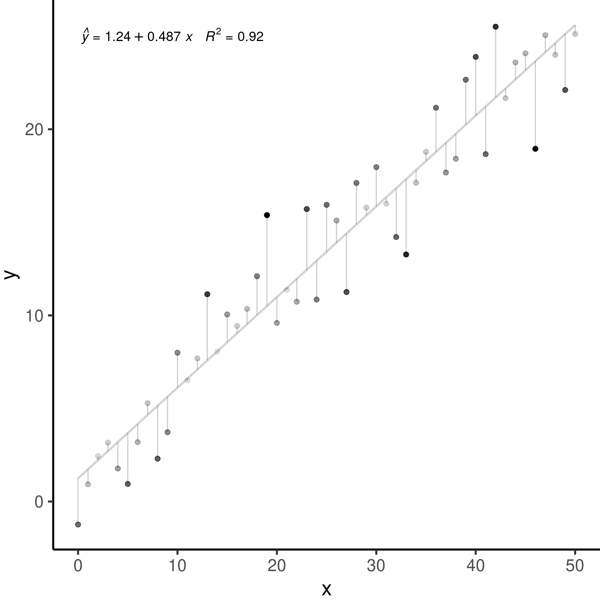

Chapitre 3 Révision des modèles linéaires
La plupart de nos recherches tentent d’expliquer des tendances dans nos observations à l’aide de variables prédictives.
Nous cherchons souvent une fonction \(f\) qui explique une variable réponse ( \(Y\) ) en fonction d’une ( \(X_1\) ) ou de plusieurs variables prédictives ( \(X_2\), \(X_3\), \(...\), \(X_n\) ):
\[Y = f(X_1)\] L’ensemble de variables prédictives que nous avons mesuré ne pourra jamais complètement expliquer notre variable \(Y\). Il y a une variation imprévisible dans nos modèles, i.e. l’erreur \(\epsilon\), qui fera toujours partie de notre fonction:
\[Y = f(X_1, \epsilon)\] Dans l’atelier 4, nous avons appris comment utiliser les modèles linéaires généraux pour décrire la relation entre variables. Ces modèles comportent les test de \(t\), les analyses de variances (ANOVA), les régressions linéaires (simple ou avec plusieurs variables prédictrices) et les analyses de covariance (ANCOVA).
3.1 Modèles linéaires généraux
3.1.1 Définition
La formule générale de notre fonction linéaire \(Y = f(X_1)\) serait représentée comme:
\[Y = \beta_0 + \beta_1X_i + \varepsilon\]
où:
\(Y_i\) est la valeur prédite de la variable réponse
\(\beta_0\) est le coefficient inconnu de l’ordonnée à l’origine
\(\beta_1\) est le coefficient inconnu de la pente
\(X_i\) est la valeur de la variable explicative
\(\varepsilon_i\) représente les résidus du modèle obtenus d’une distribution normale de moyenne 0 et de variance constante (qui est à estimer).
3.1.2 Conditions d’utilisation
Nous avons aussi appris que les modèles linéaires produisent seulement des estimateurs non-biaisés (c’est-à-dire, sont seulement fiables) si ils suivent quelques conditions. Notamment:
1. La population peut être décrite par une relation linéaire:
\[Y = \beta_0 + \beta_1X_i + \varepsilon\]
2. Le terme d’erreur \(\varepsilon\) a la même variance quelque soit la valeur de la variable explicative (c’est-à-dire, l’homoscédasticité), et les termes d’erreur ne sont pas corrélés entre les observations (donc, il n’y a pas d’autocorrélation).
\[\mathbb{V}{\rm ar} (\epsilon_i | \mathbf{X} ) = \sigma^2_\epsilon,\ \forall i = 1,..,N\] et,
\[\mathbb{C}{\rm ov} (\epsilon_i, \epsilon_j) = 0,\ i \neq j\]
3. Les résidus suivent une distribution normale:
\[\boldsymbol{\varepsilon} | \mathbf{X} \sim \mathcal{N} \left( \mathbf{0}, \sigma^2_\epsilon \mathbf{I} \right)\]
Les estimations d’un modèle général linéaire telles que \(\widehat{Y} = \widehat{\beta}_0 + \widehat{\beta}_1 X\) assumemt que les données sont générées selon les conditions présentées.

3.2 Un exemple avec les modèles linéaires généraux
Simulons 250 unités d’observation qui satisfaient nos conditions d’application: \(\epsilon_i \sim \mathcal{N}(0, 2^2), i = 1,...,250\).
nSamples <- 250
ID <- factor(c(seq(1:nSamples)))
PredVar <- runif(nSamples, min = 0, max = 50)
simNormData <- data.frame(ID = ID, PredVar = PredVar, RespVar = (2 *
PredVar + rnorm(nSamples, mean = 0, sd = 2)))
lm.simNormData <- lm(RespVar ~ PredVar, data = simNormData)layout(matrix(c(1, 2, 3, 4), 2, 2))
plot(lm.simNormData)Ces graphiques permettent de vérifier les conditions d’application de la linéarité et l’homoscédasticité.
Le graphique QQ permet la comparaison des résidus avec une distribution normal.
Scale-location plot (la racine carré des résidus standardisés vs. valeur prédite) est utile pour vérifier l’homoscédasticité;
La distance de Cook est une mesure d’influence des observations sur le coefficient de la régression linéaire et permet d’identifier des données aberrantes.
Les résidus équivaut \(Y-\widehat{Y}\), soit la valeur observée par la valeur prédite par le modèle.
Les données aberrantes sont des observations avec des résidus larges, i.e. la valeur observée (\(Y\)) pour un point (\(x\)) est très différente de la valeur prédite par le modèle linéaire (\(\widehat{Y}\)).
Un point de levier est défini comme une observation \(Y\) qui a une valeur de \(x\) qui est très éloignée de la moyenne de \(x\).
Une observation influente est défini par une observation \(Y\) qui change la pente de la relation \(\beta_1\). Donc, un point influent va avoir une influence élevée sur la prédiction du modèle. Une méthode pour trouver des observations influentes est de comparer un modèle avec et sans la dite observation.